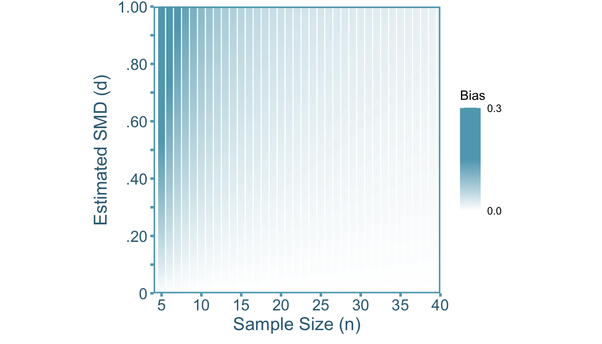
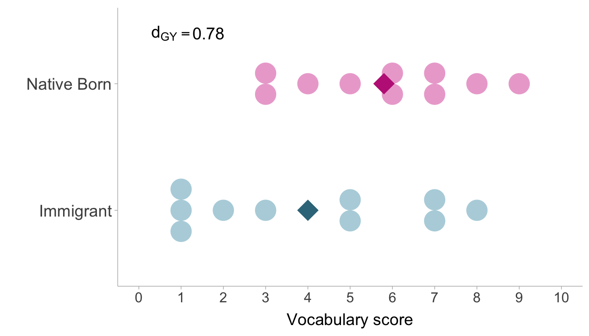
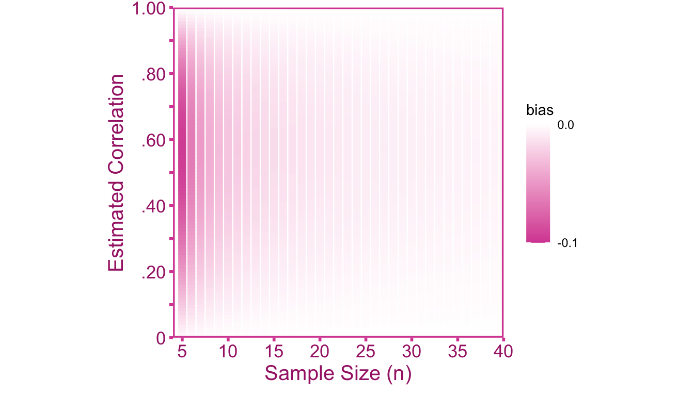

5 Small Samples
5.1 Introduction
The purpose of sample estimates is to draw inferences about the population effect sizes. However, effect size estimators such as Pearson’s correlation coefficient and Cohen’s \(d\) are biased in small sample sizes. This small sample bias can be construed as an artifact and can be adjusted with the appropriate correction factor.
5.2 Correcting SMDs
5.2.1 Defining the Target SMD
Our quantity of interest is the population SMD, \(\delta_{GY}\). For now, let the asterisk \(*\) denote the Cohen’s sample estimator defined in the previous chapter, \(d^*_{GY}\). We can model the relationship between the population standardized mean difference and the estimate as,
\[ d^*_{GY} = \alpha\delta_{GY}+\varepsilon_d. \]
Where \(\alpha\) is an attenuation/inflation factor and \(\varepsilon\) is our sampling error term.
5.2.2 Artifact Correction for SMDs
As the sample size approaches infinity, Cohen’s estimator of the standardized mean difference is unbiased (Hedges 1981; Cohen 2013). However, in small sample sizes Cohen’s estimator is inflated, that is, on average, it overestimates the population standardized mean difference. To see why this is the case, we can first define the population standardized mean difference between group \(A\) and group \(B\) such that,
\[ \delta = \frac{\mu_{Y|G=0}-\mu_{Y|G=0}}{\sigma_{Y|G}}. \]
Cohen’s sample estimator (Cohen 1988) of the SMD is,
\[ d^*_{GY} = \frac{m_{Y|G=0}-m_{Y|G=0}}{s_{Y|G}}, \tag{5.1}\]
where \(s_{Y|G}\) is calculated from pooling the within-group standard deviations. The estimator, \(d^*_{GY}\), is an asymptotically unbiased estimate of \(\delta_{GY}\) as \(n\rightarrow \infty\). However, \(d^*_{GY}\) is a biased estimator of \(\delta_{GY}\) when the sample size is finite (\(n<\infty\)). Particularly, the smaller the sample size, the larger the bias. We can see that in Figure 5.1, \(d^*_{GY}\) tends to over-estimates \(\delta_{GY}\), therefore \(d^*_{GY}\) is an inflated estimator of \(\delta_{GY}\). To obtain an unbiased estimate of the population standardized mean difference, we need to first calculate the artifact inflation factor, \(\alpha\). Before we can calculate \(\alpha\) we have to assume that the distribution of \(Y\) conditioned on \(G\) is normal such that,
\[ Y|G^{-1}(0) \sim \mathcal{N}_1(\mu_{Y|G=0},\sigma^2_{Y|G}) \]
\[ Y|G^{-1}(1) \sim \mathcal{N}_1(\mu_{Y|G=1},\sigma^2_{Y|G}) \]
Recall that the inverse of a random variable will return the subset of the sample space assigned that value (e.g., \(G^{-1}(0)\subset \Omega\)). In this case, the artifact inflation factor has been derived previously by Hedges (1989). For other types of artifacts, \(\alpha\) is unknown in practice and must be estimated, however, for small sample bias the exact value of \(\alpha\) is known (provided the distributional assumptions are true). The precise value of \(\alpha\) is a function of sample size (equation 6e, Hedges 1989),
\[ \alpha = \frac{\Gamma\left(\frac{n-3}{2}\right)\sqrt{\frac{n-2}{2}}}{\Gamma\left(\frac{n-2}{2}\right)}. \]
Where \(\Gamma(\cdot)\) denotes the gamma function. The gamma function is factorial function generalized to non-integers (note that a factorial function on integers would look something like: \(4! = 4 \cdot 3 \cdot 2 \cdot 1\), Taboga 2021). There is also an approximation of \(\alpha\) that is more computationally trivial (re-arrangement of the first formula on pp. 114, Hedges 1989):
\[ \alpha \approx \frac{4n-9}{4n-12} \]
However, with the advent of computers, this approximation formula is unnecessary. We can see in Figure 5.1 that there is notable bias when sample size is below 20. Furthermore, the bias is most pronounced when the sample SMD value is larger (there is no bias at \(d*_{GY}=0\)).
Using value of \(\alpha\), we can correct the \(d\) value such that,
\[ d_{GY} = \frac{d^*_{GY}}{\alpha} = \frac{d^*_{GY}}{ \left[\frac{\Gamma\left(\frac{n-3}{2}\right)\sqrt{\frac{n-2}{2}}}{\Gamma\left(\frac{n-2}{2}\right)}\right]}. \tag{5.2}\]
To obtain the sampling variance of \(d_{GY}\), since we the value of \(alpha\) is fixed for a given sample size we can simply divide the sampling variance of \(d^*_{GY}\) by \(\alpha^2\),
\[ \mathrm{var}(d_{GY}) = \frac{\mathrm{var}(d^*_{GY})}{\alpha^2} = \frac{\mathrm{var}(d^*_{GY})}{ \left[\frac{\Gamma\left(\frac{n-3}{2}\right)\sqrt{\frac{n-2}{2}}}{\Gamma\left(\frac{n-2}{2}\right)}\right]^2}. \tag{5.3}\]
Example 5.1 (English Vocabulary Performance) The General Social Survey (GSS) is a large national survey conducted by the University of Chicago. The survey includes data on English vocabulary knowledge from 28,867 individuals. Vocabulary scores are calculated by asking respondents about their knowledge of 10 words and the number of words they know out of 10 is their vocabulary score. For many immigrants coming to the the United States, English is not their first language so there is reason to believe that individuals born in the United states will see higher vocabulary scores than those who were not. Let’s say we were to conduct a study on a small 20 person sample of the GSS sample,

The sample SMD between native born individuals and immigrants using Cohen’s estimator of the standardized mean difference is \(d^*_{GY}=.78\). The correction factor can be applied to obtain an unbiased estimate of the population SMD,
\[ d_{GY} = \frac{d^*_{GY}}{\alpha} = \frac{d^*_{GY}}{ \left[\frac{\Gamma\left(\frac{n-3}{2}\right)\sqrt{\frac{n-2}{2}}}{\Gamma\left(\frac{n-2}{2}\right)}\right]} = \frac{.78}{ \left[\frac{42103.23}{40320}\right]} = .75. \]
Note that \(\Gamma(\cdot)\) can be solved in R with the gamma() function. Notice that the correction is small, since the bias observed with moderate to large sample sizes becomes quite small.
5.3 Correcting Correlations
5.3.1 Defining the Target Correlation
Our target quantity is the population correlation, \(\rho_{XY}\). We can model the relationship between the population correlation and Pearson’s sample estimator (\(r^*_{XY}\)) with,
\[ r^*_{XY} = \alpha\rho_{XY}+\varepsilon_r \]
Where \(a\) is our small sample biasing factor and \(e\) is our sampling error term.
5.3.2 Artifact Correction for Correlations
Let’s first define the correlation in the population as the covariance between \(X\) and \(Y\) (\(\sigma_{XY}\)) standardized by the product of the standard deviation of \(X\) (\(\sigma_X\)) and \(Y\) (\(\sigma_Y\)):
\[ \rho = \frac{\sigma_{XY}}{\sigma_{X}\sigma_Y}. \]
Pearson’s sample estimator can be defined as,
\[ r_{XY} = \frac{s_{XY}}{s_{X}s_Y} \]
Assuming the joint distribution of \(X\) and \(Y\) is normal such that,
\[ X,Y\sim\mathcal{N}_2\left(\begin{bmatrix} \mu_{X} \\ \mu_Y\end{bmatrix},\begin{bmatrix} \sigma^2_{X} & \sigma_{XY} \\ \sigma_{XY}&\sigma^2_{Y} \end{bmatrix}\right), \]
then Pearson’s sample estimator will be attenuated in small samples (Olkin and Pratt 1958). Then attenuation factor \(\alpha\) was derived by Olkin and Pratt (1958, eq. 2.3),
\[ \alpha = \frac{1}{F\left(\frac{1}{2},\frac{1}{2};\frac{n-1}{2};1-\left(r^*_{XY}\right)^2\right)}. \tag{5.4}\]
Where \(F(\cdot)\) is the hypergeometric function. The hypergeometric function is a complicated and iterative function which which can be defined in terms of \(\Gamma(\cdot)\) functions (plugging in values into equation 2.2, Olkin and Pratt 1958)
\[ F\left(\frac{1}{2},\frac{1}{2};\frac{n-1}{2};1-\left(r^*_{XY}\right)^2\right) = \sum^{\infty}_{z=0} \frac{\Gamma\left(\frac{1}{2} + z\right)\Gamma\left(\frac{n-1}{2}\right)\left(1-\left(r^*_{XY}\right)^2\right)^z}{\Gamma\left(\frac{1}{2}\right)\Gamma\left(\frac{n-1}{2}+z\right)z!} \]
Although this formula is complex, it can be easily done in R so do not worry! There is also an approximation of \(\alpha\) that is much simpler than Equation 5.4,
\[ a \approx \frac{2(n-3)}{2n-\left(r^*_{XY}\right)^2-5} \]
Then we can correct the point-estimate the sampling variance for small sample bias. I will emphasize again that approximations are not necessary if a computer is available. We can see in Figure 5.3 that there is notable bias when sample size is below 15. Furthermore, the bias is most pronounced when the sample correlation around .60 (there is no bias at \(r=0\) and \(r=\pm 1\)).

To correct for small sample bias, we can divide the sample correlation \(r\) by the attenuation factor \(\alpha\),
\[ r_{XY} = \frac{r^*_{XY}}{\alpha} = \frac{r^*_{XY}}{1/F\left(\frac{1}{2},\frac{1}{2};\frac{n-1}{2};1-(r^*_{XY})^2\right)} \tag{5.5}\]
Where the sampling variance of \(r_{XY}\) can be obtained by correcting the observed sampling variance (\(\mathrm{var}\left(r^*_{XY}\right)\)),
\[ \mathrm{var}\left(r_{XY}\right) = \frac{\mathrm{var}\left(r^*_{XY}\right)}{\alpha^2} = \frac{\mathrm{var}\left(r^*_{XY}\right)}{\left[1/F\left(\frac{1}{2},\frac{1}{2};\frac{n-1}{2};1-r^2\right)\right]^2} \tag{5.6}\]